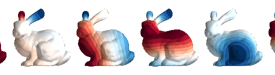
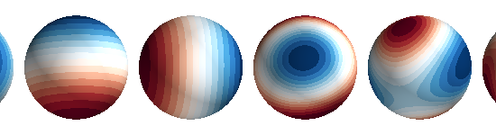
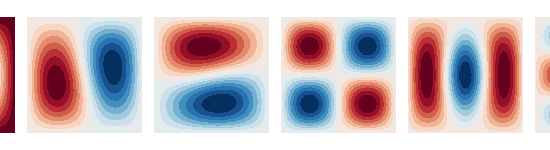

Note
Click here to download the full example code
Visualize SUH components on 3 surfaces¶
import numpy as np
import matplotlib.pyplot as plt
from mayavi import mlab
import trimesh
from bfieldtools.suhtools import SuhBasis
from bfieldtools.utils import find_mesh_boundaries
from trimesh.creation import icosphere
from bfieldtools.utils import load_example_mesh
# Import meshes
# Sphere
sphere = icosphere(4, 0.1)
# Plane mesh centered on the origin
plane = load_example_mesh("10x10_plane_hires")
scaling_factor = 0.02
plane.apply_scale(scaling_factor)
# Rotate to x-plane
t = np.eye(4)
t[1:3, 1:3] = np.array([[0, 1], [-1, 0]])
plane.apply_transform(t)
# Bunny
bunny = load_example_mesh("bunny_repaired")
bunny.vertices -= bunny.vertices.mean(axis=0)
for mesh in (sphere, plane, bunny):
mlab.triangular_mesh(*mesh.vertices.T, mesh.faces)
Nc = 20
basis_sphere = SuhBasis(sphere, Nc)
basis_plane = SuhBasis(plane, Nc)
basis_bunny = SuhBasis(bunny, Nc)
A = [mesh.area for mesh in (bunny, sphere, plane)]
Out:
Calculating surface harmonics expansion...
Computing the laplacian matrix...
Computing the mass matrix...
Closed mesh or Neumann BC, leaving out the constant component
Calculating surface harmonics expansion...
Computing the laplacian matrix...
Computing the mass matrix...
Calculating surface harmonics expansion...
Computing the laplacian matrix...
Computing the mass matrix...
Closed mesh or Neumann BC, leaving out the constant component
Nfuncs = [0, 1, 2, 3, 4, 5]
kwargs = {"colormap": "RdBu", "ncolors": 15}
plt.figure(figsize=(3.5, 2.5))
for i, b in enumerate((basis_bunny, basis_sphere, basis_plane)):
fig = mlab.figure(bgcolor=(1, 1, 1), size=(550, 150))
s = b.plot(Nfuncs, 0.1, Ncols=6, figure=fig, **kwargs)
s[0].scene.parallel_projection = True
s[0].scene.z_plus_view()
if i == 0:
s[0].scene.camera.parallel_scale = 0.1
else:
s[0].scene.camera.parallel_scale = 0.13
plt.plot(np.sqrt(b.eigenvals * A[i]), ".-")
plt.legend(("bunny", "sphere", "square"), loc="lower right")
plt.xlabel("component index $n$")
plt.ylabel("$\sqrt{A}k_n$")
plt.tight_layout()
- 
- 
- 
Out:
0 0
1 0
2 0
3 0
4 0
5 0
0 0
1 0
2 0
3 0
4 0
5 0
0 0
1 0
2 0
3 0
4 0
5 0
Total running time of the script: ( 0 minutes 3.533 seconds)
Estimated memory usage: 12 MB